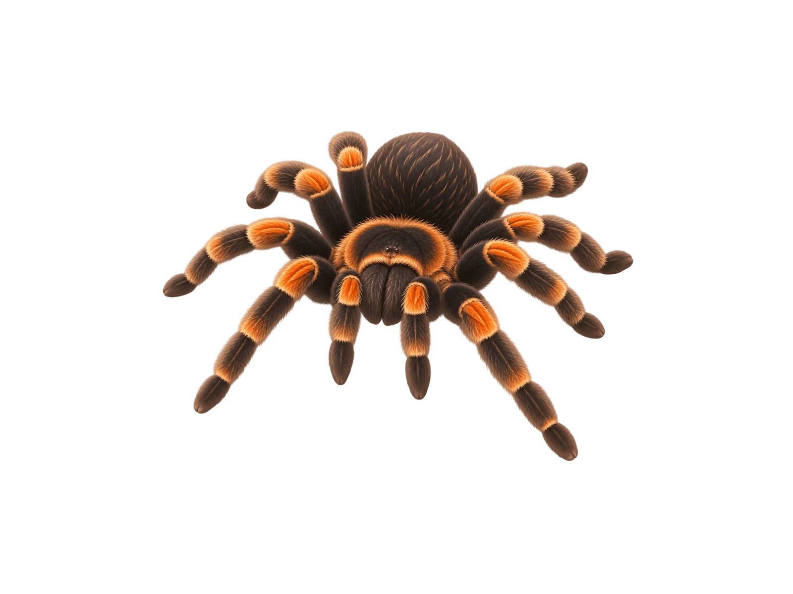

Tarantula · card-size test
One approved tarantula illustration, displayed at three realistic frontend sizes. The animal is never cropped, including the leg tips. Backgrounds and card elements are CSS, so we can reuse the transparent animal asset across the app.
01 · DASHBOARD PET CARD

Vesper
Tarantula
Unassigned
170 px wide — matches the compact card proportions in the approved dashboard concept.
02 · PETS GRID CARD
Vesper
Tarantula
Unassigned
245 px wide — proposed size for a dedicated Pets page; not an approved screen layout.
03 · LARGER FEATURE CARD
Vesper
Tarantula
Unassigned
335 px wide — demonstrates how much more detail remains visible at a larger scale.
What this test evaluates
Silhouette clarity, pattern visibility, background compatibility, and readability of the tarantula’s leg arrangement and card information at common sizes.
What it does not approve
The Pets page layout, exact color tokens, or typography. The tarantula illustration is approved as an art-style reference; this preview is not production UI.